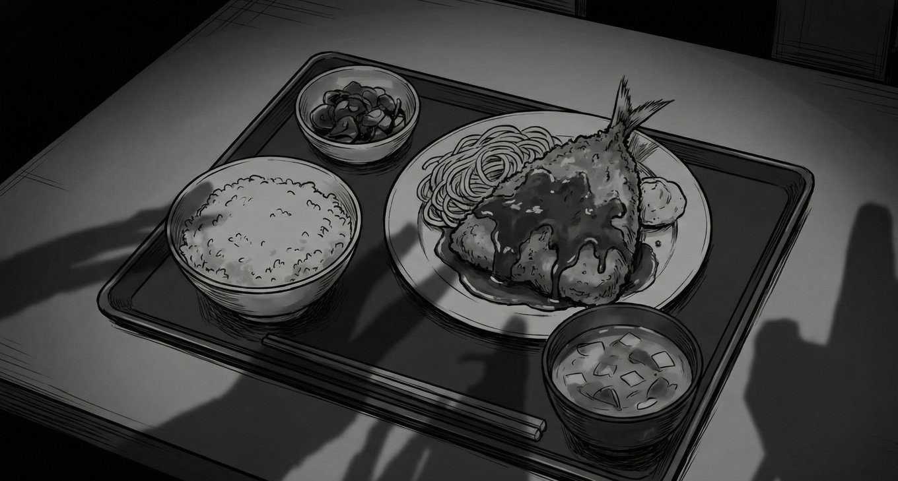

「売れるはず」という名のギャンブル

どーも！とーるです！
最近、近所の定食屋に入ったときの話なんですが。
「アジフライ定食」を頼んだら、店主がサービス精神旺盛な人で、なぜか付け合わせに「大量のひじきの煮物」と「ポテトサラダ」と「おまけのナポリタン」を乗せてきたんです。
お皿の上はもう、大渋滞。
僕はサクサクのアジフライが食べたかっただけなのに、隣のナポリタンのケチャップがフライの衣に侵食してきて、衣がベチャベチャになっている。
店主は「サービスだよ！お得でしょ！」と満面の笑み。
ありがたい……ありがたいんだけど、「これじゃない感」がすごい。
あなたもこんな経験ないですか？？笑
なんていうんだろう...「小さな親切、大きなお世話」みたいな....
実は、今のSNS起業界隈はこの「アジフライ定食」だらけです。
良かれと思って詰め込みすぎて、肝心のアジフライ（本質的な価値）を台無しにしている。
というわけで、今回は、多くの起業家が陥っている「希望的観測」という名の呪いと、本当に求められる価値の作り方について、解説していきます。
【観察】「売れるはず」という名のギャンブル
今のSNSを見ていて一番危ういなと感じるのは、ほとんどの人が「プロダクトアウトという名の希望的観測」だけで商品を考え、集客をしていること。
「私はこれが得意だから」「このノウハウを詰め込めば、高額でも売れるはずだ」
これ、ビジネスじゃなくて「祈り」です。
自分が作りたいもの、自分が信じたい価値を、相手が欲しがっていると勝手に定義して、暗闇に向かって全力でバットを振っている状態。
『"いい商品"＝"売れる商品"というわけではない』。
残念ながら、市場はあなたの「熱意」には1円も払いません。
市場が払うのは、自分たちの「不の解消（悩み・不満・不安）」に対してだけです。
「自分が作りたいもの」を入り口にするプロダクトアウトは、実績のある天才だけが許される特権です。
例）エアコンクリーニングと「郵便ポスト」のパラドックス
ここで、価値の捉え方について重要な話をします。
あなたが「エアコンクリーニング」を業者に依頼したとしましょう。
業者がやってきて、エアコンをピカピカにしてくれた。ここまでは「期待通り（満足）」です。
その業者が帰り際、こう言いました。
「ついでに、郵便ポストもピカピカに磨いておきました！ サービスです！」
あなたはどう思いますか？
「あ、ありがとう（苦笑）」くらいですよね。中には「勝手なことしないでほしい」と思う人もいるかもしれない。
実はこれ、僕が5年前に友人とハウスクリーニング事業を立ち上げた時の、実話なんです笑。
その時の相方（オーナー）が、まあ面白いというか、プロダクトアウトの権化みたいな男でして笑。
ある現場でエアコン掃除が終わった後、彼はおもむろに外へ出て、頼まれてもいない「郵便ポスト」をピッカピカに磨き上げたんですよ。
戻ってきた彼は、まさに「どや！」と言わんばかりの誇らしげな顔。
一方、それを見た依頼者さんは、なんとも言えない「苦笑い」を浮かべていました。
現場を離れた後、彼が満足げにこう言ったのを今でも覚えています。
「あの人、絶対郵便ポスト掃除してほしいと思っとったに。俺には分かるわ」
……いや、違う。
その人はエアコンを掃除してほしかったんだよ。
これこそが、起業家が陥る最大の罠です。
「相手が求めているはずだ」という勝手な思い込み（プロダクトアウト）が暴走すると、相手の「苦笑い」を「満足の笑み」だと脳内変換し、ニーズとは180度違う方向に全力を出してしまう。
この「どや顔の友人」に、あなたはなっていませんか？
これ、「期待以上」ではなく「期待とは異なる価値」なんです。
相手が求めているのは「綺麗な空気」であって、「綺麗なポスト」ではない。
ところが、SNS起業家はこの「ポスト磨き」を付加価値だと勘違いして、商品に山ほど詰め込みます。
- 100本以上の動画講義（全部見る時間なんてない）
- 24時間いつでも質問OK（そんなに質問することない）
- 毎日のマインドセット配信（正直、通知がうるさい）
「高額で販売したいから」という自分勝手な理由で、ゴールに関係のないものを詰め込む。
これは付加価値ではなく、「無駄な付加価値」です。アジフライの衣をベチャベチャにするケチャップと同じなんです。
正解は「同時並行」のプロトタイプ戦略
じゃあ、どうやって「ズレていない商品」を作ればいいのか？
ここで、以前お話しした「チャンク」の概念を実践的に使います。
まだ読んでないよぉという方は後からでも読んでみてください。
➔ #コラム54：その「謎のケーブル」、何に繋がっているんですか？
① 大チャンク（仮のゴール）を決める
まずは「誰をどこに連れて行くか」という大きな旗を立てます。でも、この段階では中身をガチガチに作り込んではいけません。
② 小チャンクで「認知」と「検証」をバラ撒く
大チャンクから逆算した、即効性・簡単・気軽な「小チャンク（SNS投稿）」をバラ撒きます。ここで大事なのは、フォロワーとのコミュニケーションです。
「どのネタに反応が良いか？」「何に一番悩んでいるか？」この反応を市場でゲットしましょう。
③ プロトタイプ（モニター）を招き入れる
商品が完成してから売るのではなく、「商品を開発しながら、興味がある人をプロトタイプ（モニター）として招く」んです。
実際に人を動かし、実施していく過程で「取捨選択」を行います。
この実測値に基づいて、ゴールのために「本当に必要なもの」だけを残していく。これがマーケットインとプロダクトアウトの融合、つまり「共創」のプロセスです。
【心理学】「イケア効果」と「多選択のパラドックス」
なぜ、人は不要なものを詰め込んでしまうのか。ここには2つの強力なバイアスが働いています。
イケア効果：自分が苦労して作ったものに愛着が湧きすぎて、客観的な価値を見失う心理です。「これだけ頑張って作った動画だから、絶対に入れるべきだ」という執着が、顧客の利便性を損なわせます。
多選択のパラドックス：「選択肢が多い方が、相手は喜ぶはずだ」という思い込みです。行動経済学では、選択肢が多すぎると人は決定を回避し、満足度が下がることが証明されています。
「ハイブリッド商品」を作る3ステップ
自分を殺さず、かつ確実に選ばれるための具体的な手順。これが海外の成功事例やH2H戦略の核となる部分です。
① 悩みは「外」から借りる（マーケットイン）
まずは自分のやりたいことではなく、ターゲットが「夜も眠れないほど切実に悩んでいること」をリサーチします。
悩みを語る「言葉」は、必ず相手のものを使ってください。自分の中から出た言葉は、相手に届く前に「あ、この人自分のことしか考えてないな」と検知されます。
② 答えは「内」から出す（プロダクトアウト）
その悩みに対する解決策として、世の中の「正解」をなぞるのではなく、あなた独自の経験や哲学をぶつけます。
「普通はこう言われるけれど、私はこう思う」というあなたの視点こそが、選ばれる理由になります。ここで初めて「あなた」という個性が価値に変わります。
③ 価値を「翻訳」する（ハイブリッド）
最後に、あなたのこだわりが「相手の未来をどう変えるか」を、相手が理解できる言葉に翻訳します。
あなたが「良い」と思うことではなく、相手が「それなら欲しい」と思える形に整える作業です。
「入り口は相手の悩み、出口はあなたの想い」
このバランスが取れたとき、発信（運用）での無理なキャラ作りも、サービス提供での違和感も消えていきます。
ここまで「独りよがりのプロダクトアウトは迷惑だ」という話をしてきましたが、誤解しないでください。あなたの「こだわり」や「哲学」が不要なわけではありません。
重要なのは「出す順番と場所」です。
SNS起業における最強の布陣は、商品を「二階建て」で設計することです。
1階部分：フロント商品（入口）＝徹底的なマーケットイン
ここは「お店の入り口」です。まだあなたへの信頼がゼロの状態。
ここで「俺のこだわりの出汁が…」と語っても（プロダクトアウト）、客は「うるさいな、早く腹を満たしたいんだよ」と帰ってしまいます。
フロント商品では、あなたの自我を完全に消してください。
徹底的にリサーチし、相手が今すぐ解決したい「顕在的な悩み」に対して、最も分かりやすく、即効性のある解決策を提示する。
「そうそう、それが欲しかったの！」と言わせることに特化するのです。これが集客の最大化に繋がります。
2階部分：バックエンド商品（本質）＝強気のプロダクトアウト
フロント商品で「この人は私の悩みを分かってくれる」「この人の言うことは間違いない」という信頼を獲得した後。ここで初めて、客を「2階（奥の座敷）」に通します。
ここではもう、市場に媚びる必要はありません。
あなたが本当に伝えたい「本質的な解決策」、独自の理論、哲学を、自信を持って提示してください。
なぜなら、1階を通過した客は、もう「あなたの話を聞く準備」ができているから、です。
「実は、あなたが今悩んでいる〇〇の根本原因は、ここにあるんです。それを解決するには、私のこのメソッドしかありません」
この段階で出すプロダクトアウトは、独りよがりの押し売りではなく、「信頼した相手から提示される、唯一無二の救済策」に変わります。
「入口（フロント）は相手のために、奥（バック）は自分の信念のために」
これこそが、個人起業家が目指すべき最適解なのです。
マーケティングの歴史を振り返ると、ブログ時代から現在のSNS時代まで、常に同じことが繰り返されています。「やり方（小チャンク）」の認知が広まれば広まるほど、その戦略は腐っていきます。タピオカブームと同じです。
かつての「これを詰め込めば売れる」というテンプレは、すでにユーザーに見抜かれています。
今、求められているのは「情報の量」ではありません。
「私の複雑な悩みを、どれだけシンプルに削ぎ落として解決してくれるか」という「精度の高いチャンク」です。
「希望的観測」で肥大化した商品は、必ず自重で潰れます。一方で、プロトタイプを通じて市場の声を聴き、磨き上げられた商品は、最小限の力で最大の成果を生みます。
結論：アジフライをベチャベチャにするな
「高く売りたい」という自分のエゴを、付加価値という言葉でカバーしようとするのはやめましょう。それは、エアコンクリーニングのついでにポストを磨いて、追加料金を請求するのと同じです。
あなたの「大チャンク」は、相手のどんな「不」を解消するものですか？
そのために、今バラ撒いている「小チャンク」はちゃんと機能していますか？
そして、作り込みすぎる前に、生身の人間をモニターとして招き、彼らの反応を鏡にして商品を削ぎ落としていますか？
ビジネスとは、あなたが言いたいことを叫ぶ場所ではなく、相手のゴールへの道を「整備」する仕事です。
余計な煮物やナポリタンを皿からどかしましょう。
サクサクのアジフライだけを、最高の状態で提供する。その「潔さ」にこそ、高単価でも選ばれる本物のプロの風格が宿るってもんです。
なんつて
とーる｜猫好きの行動経済アナリスト